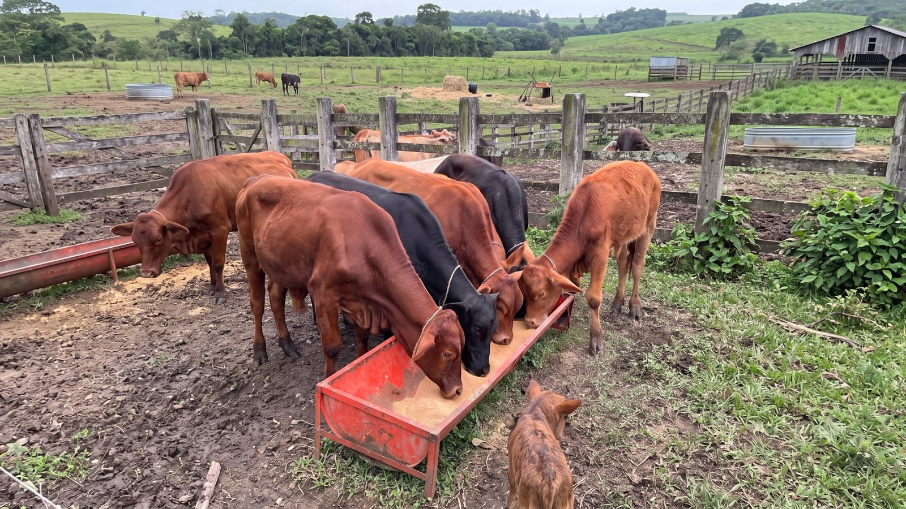
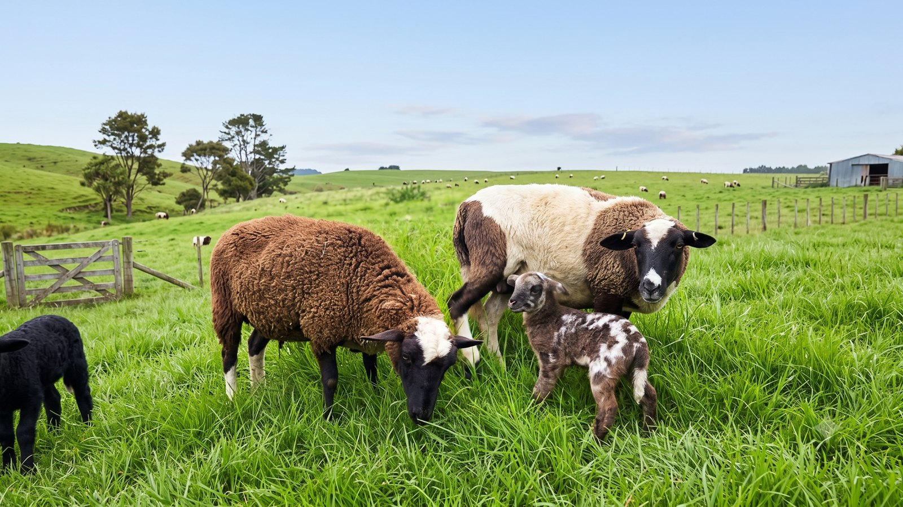
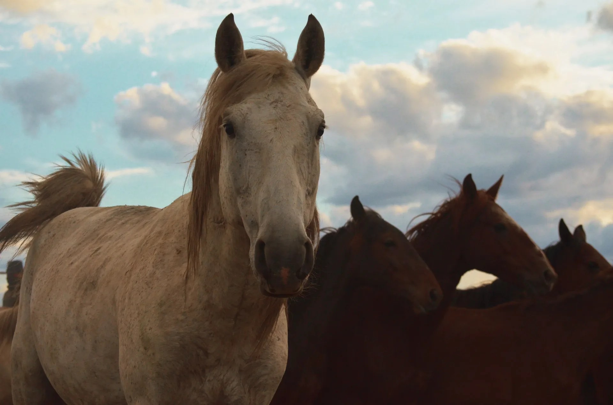
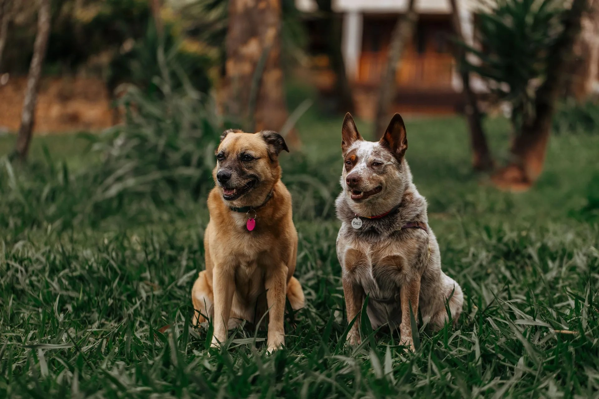

Bovinos
Desarrollo y engorda
Espacio para fotografías reales de becerros, novillos o ganado alimentado con productos disponibles.
Esta página está preparada para reunir fotografías autorizadas, comentarios reales y evidencias de uso de productos abatez. Así el cliente puede revisar experiencias sin saturar la página principal.
Cuando la empresa reciba imágenes reales de animales, entregas o costales en campo, se podrán colocar aquí sin modificar la estructura del sitio.

Espacio para fotografías reales de becerros, novillos o ganado alimentado con productos disponibles.

Sección para mostrar animales y experiencias de productores con autorización previa.

Área lista para añadir fotografías de corrales, etapas productivas y entregas.

Espacio para evidencias visuales de cuidado, condición corporal y alimentación.

Galería para clientes que compartan fotos de mascotas y productos adquiridos.

Aquí se puede integrar la foto real de fábrica, bodega, entregas y equipo de trabajo.
Para mantener la página seria, esta sección está pensada únicamente para comentarios autorizados por clientes reales. No se agregaron testimonios inventados.
Espacio reservado para opinión real de productor o cliente, con nombre, zona y autorización de publicación.
Área para colocar fotos de animales, costales o entregas compartidas por clientes.
Se puede incluir localidad general sin exponer datos privados del cliente.
Ideal para evitar contenido falso y mantener confianza profesional.
Nuestro equipo puede recibir tu solicitud por WhatsApp para productos, disponibilidad, presentaciones o autorización de fotografías/testimonios.